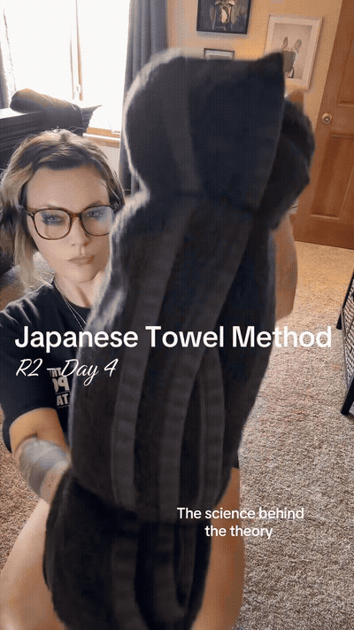

The "Japanese Towel Method" — Posture & Waist (R2-D4
by
@anonymous
· anonymous · 9 exercises · 8fps GIFs
Source reel
1
2
3
4
5
6
7
8
9
💡
How to follow:
🎬 **Reel Digest: The "Japanese Towel Method" — Posture & Waist (R2-D4)** (`DcuC86px8pu`)
1
Welcome to Round 2, day 4 of the Japanese Talmud, the Talmud that appa
Welcome to Round 2, day 4 of the Japanese Talmud, the Talmud that apparently slims your waistline,
2
Flattens your stomach, relands your hips, corrects your posture, and s

flattens your stomach, relands your hips, corrects your posture, and so much more.
3
Theory is simple. Dr. Fukazizzi says,
Theory is simple. Dr. Fukazizzi says,
4
Sitting for hours at a desk on a couch causes hip flexors to shorten a
sitting for hours at a desk on a couch causes hip flexors to shorten and tighten,
5
Pulling the pelvis forward into an unnatural forward slant known as in
pulling the pelvis forward into an unnatural forward slant known as interior pelvic tilt.
6
Theory claims that by placing a dance roll,
Theory claims that by placing a dance roll,
7
Talmud beneath the lumbar spine forces the pelvis to pivot backward.
Talmud beneath the lumbar spine forces the pelvis to pivot backward.
8
This passive extension stretches and chronically tighten hip flexors a
This passive extension stretches and chronically tighten hip flexors and deep soist muscles.
9
Turning your feet inward so the big toes touch forces the head of the
Turning your feet inward so the big toes touch forces the head of the femur,
the thigh bone, to rotate internally inside the hip socket.
Rotation stretches the external hip rotators mechanically, driving the pelvic ring back to a neutral